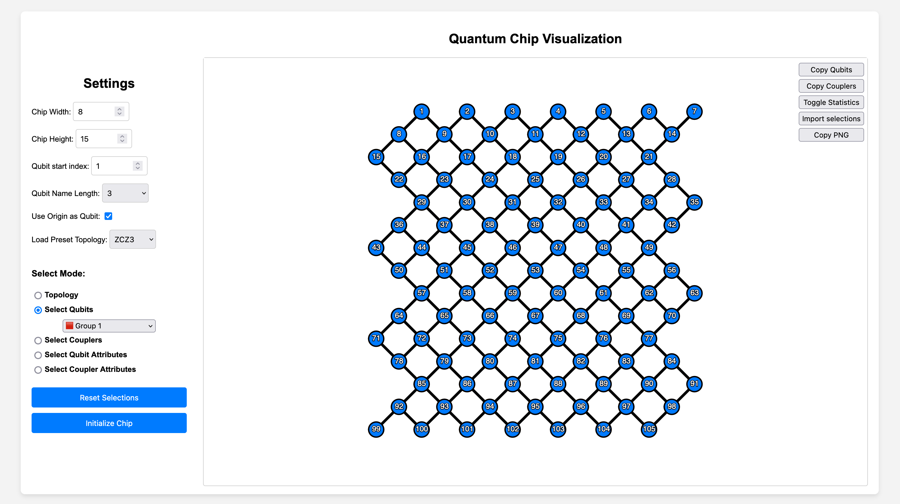

This simple tool is designed to alleviate the pain of manually typing qubit/coupler names in experimental scripts.
Through a visual interface, users can quickly select desired qubits/couplers and easily copy their list or dictionary with attribute values to the clipboard. This copied content can then be pasted directly into the experimental script.

View the page at https://inmzhang.github.io/qselector/, and the github repository is at https://github.com/inmzhang/qselector.